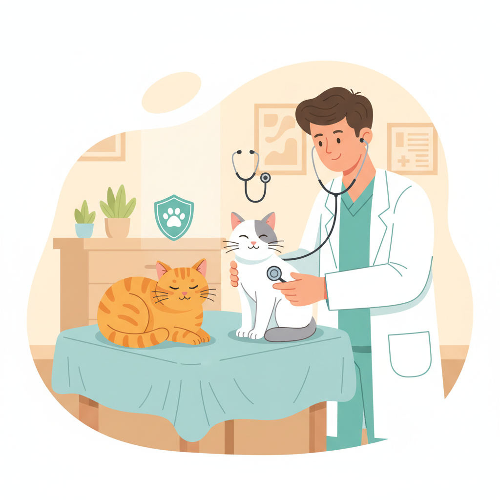

FIV e FeLV: o que todo tutor de gatos precisa saber 🐾

Por Plantas & Gatos - Seu guia de confiança sobre cuidados e comportamento felino
Conviver com gatos é um privilégio, mas também exige atenção especial à saúde deles. Entre as doenças felinas mais comentadas estão FIV (Vírus da Imunodeficiência Felina) e FeLV (Vírus da Leucemia Felina). Apesar de diferentes, ambas podem comprometer significativamente o bem-estar dos nossos amigos peludos e exigem cuidados específicos baseados em evidências científicas atualizadas.
Dados Epidemiológicos no Brasil
Pesquisas científicas recentes revelam a importância dessas doenças no cenário nacional. Estudos realizados no Centro-Oeste brasileiro mostram que a prevalência da FIV (12,5%) supera a da FeLV (4,5%) em gatos domésticos. Na região metropolitana de Lisboa, dados similares apontam frequências de 10,5% para FIV e 11,2% para FeLV, com maior incidência em machos inteiros adultos.
O que é FIV?
A FIV, conhecida como "AIDS felina", é causada por um retrovírus que enfraquece progressivamente o sistema imunológico do gato, deixando-o mais vulnerável a infecções oportunistas. O contágio geralmente ocorre através de mordidas profundas durante brigas, especialmente entre machos não castrados disputando território ou durante o acasalamento. A transmissão vertical (da mãe para os filhotes) é possível, porém menos comum.
- Não é transmissível para humanos ou outras espécies - trata-se de um vírus específico dos felinos
- O período de incubação pode ser longo, com alguns gatos permanecendo assintomáticos por anos
- A progressão da doença varia individualmente, sendo possível manter boa qualidade de vida com manejo adequado
Fases da Infecção por FIV
- Fase aguda: Pode causar febre leve e linfadenopatia, frequentemente passando despercebida
- Fase de latência: Período assintomático que pode durar anos, durante o qual o vírus permanece inativo
- Fase terminal: Caracterizada por imunodeficiência severa e aparecimento de doenças secundárias
O que é FeLV?
A FeLV é um retrovírus oncogênico que provoca imunossupressão, anemia, linfomas, leucemias e infecções secundárias. Sua transmissão é mais eficiente que a FIV, ocorrendo através de contato próximo: lambidas mútuas, compartilhamento de recipientes de água e comida, brigas, secreções nasais, saliva, urina e também da mãe para os filhotes durante a gestação ou amamentação.
- Mais contagiosa que a FIV devido aos múltiplos meios de transmissão
- Pode causar diferentes síndromes: neoplásica, degenerativa, imunossupressiva e reprodutiva
- Existe prevenção efetiva através da vacinação
Categorias de Infecção por FeLV
- Infecção progressiva: O vírus se replica continuamente, levando à doença clínica
- Infecção regressiva: O sistema imunológico controla a infecção, mas o vírus permanece latente
- Infecção localizada: Limitada a certos tecidos, como glândulas mamárias
Diagnóstico: Métodos e Interpretação
Testes Disponíveis
Teste ELISA/Snap (Teste Rápido):
- Detecta anticorpos contra FIV e antígenos do FeLV
- Resultado em 10-15 minutos
- Sensibilidade e especificidade elevadas para triagem
- Pode apresentar falsos positivos em filhotes com anticorpos maternos (FIV) ou em infecções muito recentes
Teste PCR (Reação em Cadeia da Polimerase):
- Detecta material genético viral diretamente
- Maior precisão para confirmar casos duvidosos
- Ideal para avaliação de filhotes nascidos de mães positivas
- Permite diferenciação entre infecção ativa e exposição prévia
Protocolo Diagnóstico Recomendado
- Teste inicial em todo gato novo antes da introdução no lar
- Reteste após 60 dias de quarentena para detectar infecções em período de janela
- Testes confirmatórios com PCR em casos positivos duvidosos
- Avaliação periódica anual para gatos com acesso externo
Vacinação: Estratégias de Prevenção
Diretrizes WSAVA 2024
A Associação Mundial de Veterinários de Pequenos Animais (WSAVA) atualizou suas recomendações em 2024, estabelecendo que as vacinas contra FeLV devem ser consideradas essenciais para gatos com menos de 1 ano de idade e para gatos adultos com acesso à rua ou que convivam com outros gatos que tenham acesso externo.
- Primeira vacinação: Entre 8-9 semanas de idade
- Segunda dose: 3-4 semanas após a primeira
- Reforço: Anualmente para gatos de alto risco, a cada 3 anos para gatos confinados de baixo risco
- Pré-requisito importante: Testar para FeLV antes da vacinação
Eficácia e Limitações
A vacinação contra FeLV apresenta eficácia de aproximadamente 80-85% quando realizada corretamente. É importante destacar que não existe vacina aprovada para FIV no Brasil, tornando a prevenção através do controle ambiental ainda mais crucial.
Convivendo com Gatos Positivos
Manejo Clínico
- Confinamento domiciliar para prevenir transmissão e exposição a patógenos
- Consultas veterinárias regulares a cada 6 meses, incluindo hemogramas completos
- Alimentação de alta qualidade para suporte nutricional otimizado
- Controle rigoroso de parasitas internos e externos
- Vacinação criteriosa apenas com vacinas inativadas (nunca vacinas vivas atenuadas)
Monitoramento da Saúde
- Sinais precoces de infecções secundárias (alterações no apetite, letargia, febre)
- Problemas dentários e gengivais (mais comuns em imunossuprimidos)
- Alterações comportamentais que possam indicar dor ou desconforto
- Perda de peso inexplicada ou alterações no padrão de consumo de água
Aspectos Nutricionais e Suplementação
Suporte Nutricional Especializado
- Proteína de alta qualidade (mínimo 35% na matéria seca)
- Ácidos graxos ômega-3 com propriedades anti-inflamatórias
- Antioxidantes como vitamina E, vitamina C e selênio
- Probióticos para saúde intestinal
- Controle calórico para evitar obesidade
Suplementação Terapêutica
- L-lisina: Pode ajudar no controle de infecções herpéticas
- Interferon felino recombinante: Usado em alguns países para suporte imunológico
- Lactoferrina: Proteína com propriedades imunomoduladoras
Prevenção: Estratégias Integradas
Protocolo de Introdução de Novos Gatos
- Isolamento inicial de 2-4 semanas
- Teste ELISA/Snap após chegada
- Reteste após 60-90 dias
- Exame clínico completo incluindo pesquisa de ectoparasitas
- Vacinação somente após status negativo para FeLV
Estratégias Ambientais
- Castração precoce para reduzir comportamentos de risco
- Enriquecimento ambiental para reduzir estresse
- Manejo populacional em abrigos via TNR
- Educação de tutores sobre sinais precoces e importância do acompanhamento veterinário
Perspectivas Futuras e Pesquisas
Avanços Terapêuticos
- Terapia antirretroviral adaptada da medicina humana
- Imunoterapia para estimulação do sistema imune
- Vacinas terapêuticas em desenvolvimento
- Medicina regenerativa com células-tronco
Novos Métodos Diagnósticos
- Testes point-of-care mais sensíveis
- Sequenciamento genético para caracterizar cepas
- Biomarcadores para monitoramento da doença
Impacto Socioeconômico e Bem-estar Animal
Custos Associados
- Consultas veterinárias mais frequentes
- Exames laboratoriais regulares
- Medicações para infecções secundárias
- Dieta especializada com custo superior
Benefícios da Prevenção
- Vacinação anual (R$ 80-120)
- Teste rápido FIV/FeLV (R$ 60-100)
- Castração reduz comportamentos de risco
O Manejo
O manejo de FIV e FeLV representa um dos maiores desafios na medicina felina contemporânea. A abordagem baseada em evidências demonstra que é possível proporcionar qualidade de vida satisfatória para gatos acometidos por essas retroviroses. A prevenção através da vacinação (para FeLV), testagem regular, manejo ambiental adequado e educação dos tutores permanece como a estratégia mais efetiva.
Para gatos já diagnosticados, o acompanhamento veterinário especializado, nutrição adequada e cuidados domiciliares podem proporcionar anos adicionais de vida confortável.
O investimento em prevenção e diagnóstico precoce não apenas beneficia a saúde individual dos felinos, mas também contribui para o controle populacional, representando um compromisso ético e científico com o bem-estar animal.
💡 Dica profissional: Mantenha diálogo com o veterinário sobre testagem, vacinação e monitoramento, considerando idade, estilo de vida e saúde preexistente. A medicina preventiva é o melhor investimento no bem-estar felino.
Fontes Consultadas:
- Universidade Lusófona de Humanidades e Tecnologias - Estudos epidemiológicos FIV/FeLV
- Escola de Veterinária UFMG - Protocolos diagnósticos atualizados
- WSAVA - Diretrizes de Vacinação 2024
- SciELO Brasil - Prevalência no Centro-Oeste
- Revista Foco - Publicações científicas sobre FeLV